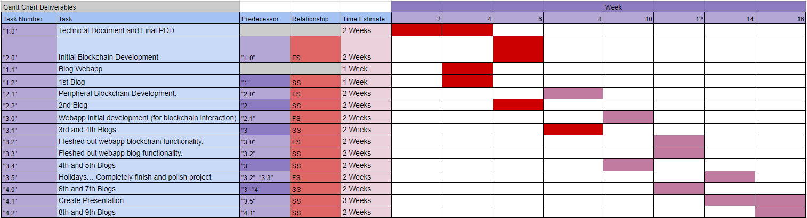

Progress Chart
Welcome to the third progress entry of logichain!
Important Updates
Since the last progress entry, here are the most pressing updates:The logichain webapp will be replacing a python blockchain.
Heres the latest gaant chart updates.

Challenges
This week did not pose too many technical challenges but more challenges in my theory behind the project. I have misunderstood the amount of complexity needed for this project to be sufficiently functional and as a result I have lost time in developing now redundant code i.e. the python blockchain. I think the overarching challenge that this creates is now time, there is less than a week until the prototype for the project is due, so within that time I will need to have a functional Webapp, API and Server.
Solution
In order to best tackle this timing issue, I will be using bootstrap, jquery and other libraries to save time wherever possible in the webapp. Once the API and python scripts are also set up, I will be more or less ready to start writing the supporting documentation.
Timeline of Progress
24/8/21
Today was a really good day for the project, I read a lot of XRP documentation and completed the technical document to a point where im happy to start production! I have decided on having two parallel chains, one which records the actions of the supply chain. This chain is to be made from scratch in python.
The purpose of this python chain is to feed the XRP chain data about smart contracts which the XRP network will make. This ensures really efficient and secure transactions and contracts. We will be using the XRP testnet, which enables us to create a funded wallet for each node in the supply chain without spending any money.
26/8/21
Today I finished the initial development of the blockchain, started creating peripheral scripts.
27/8/21
Today I realised that my idea to have a parallel python blockchain which serves ripple is just over complicated, instead i should have a webapp connected to some python scripts to handle the function of the supply chain, which communicates directly to ripple.
29/8/21
Today I set up the heroku app for the webapp to run on, started re-coding the initial development scripts, mainly used to run the server and API. I have also started development on the frontend of the webapp.